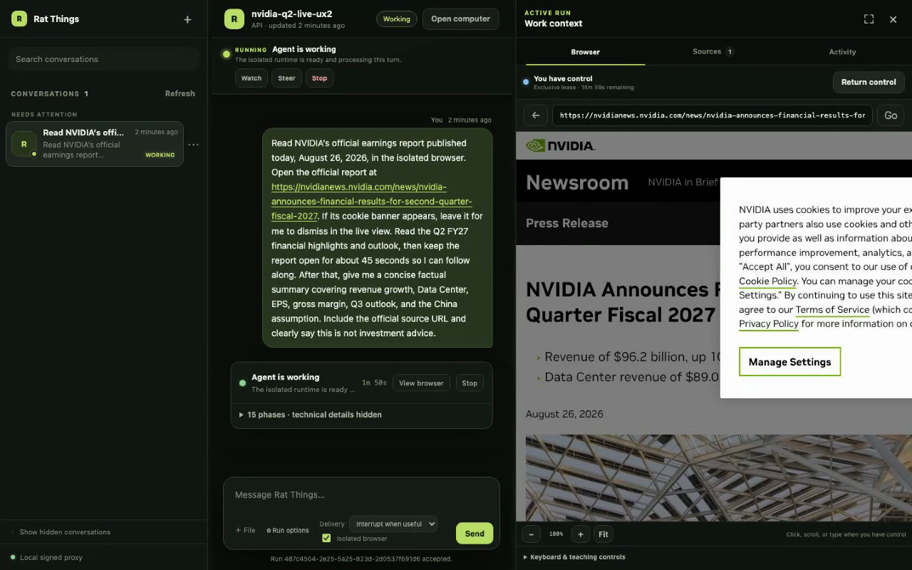
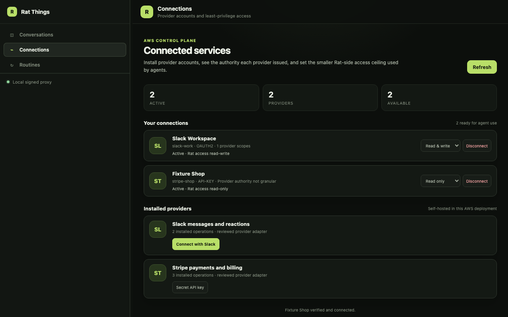
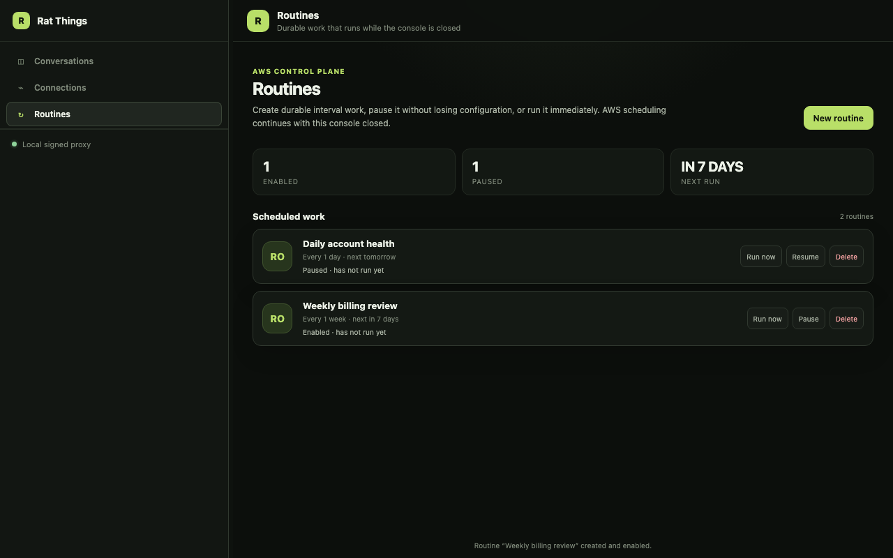
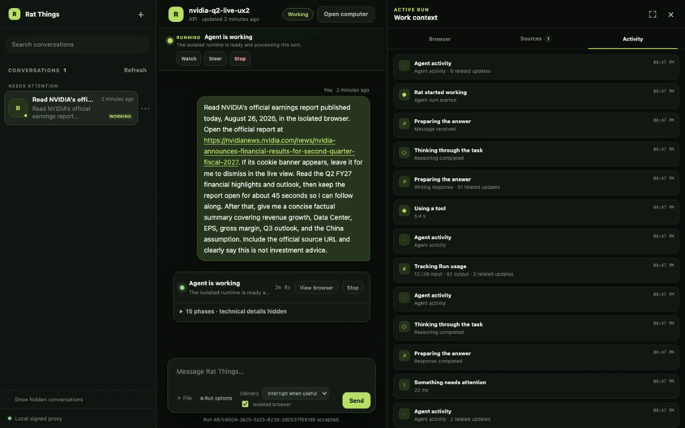
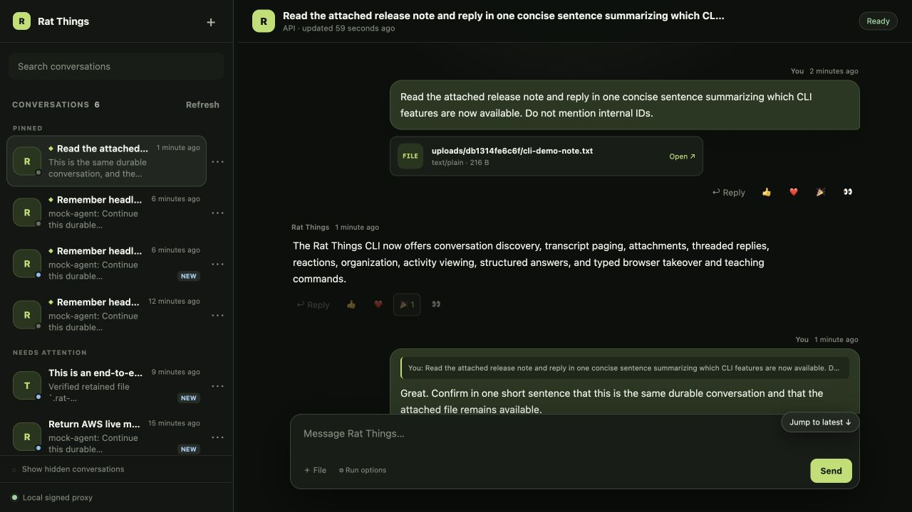
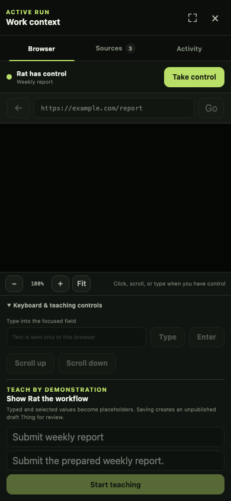
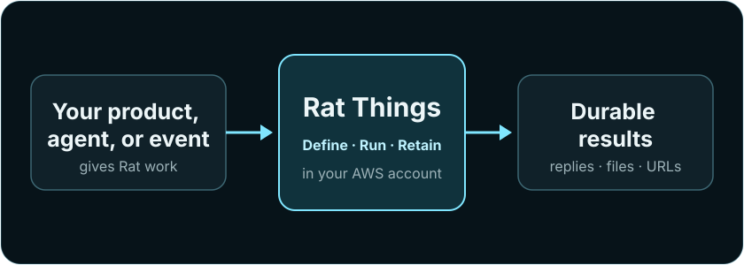

Operator or individual
CLI or small console
Search durable conversations, attach and reply, follow readable activity, install connected accounts, manage access, operate routines, and use the live browser.
rat-things conversations search "earnings"
A cloud for your agents · Self-hosted in your AWS account
Run durable, isolated agents in your AWS account. Hand off from local Codex, start work from Slack or Linear, trigger it from a schedule or your product, and let bounded tasks keep running without your laptop.
Engineering preview · self-hosted in your AWS account · not ready for untrusted multi-tenant production
Local Codex is one fast path into Rat Things. The AWS backend becomes a durable execution layer when a task needs time, parallel agents, schedules, connected accounts, or an entry point beyond your laptop.
Bring the Codex access included with your ChatGPT plan—no OpenAI Platform API key or Bedrock setup required—or start from Slack, Linear, a schedule, your product, or the API.
npm ci
npm run codex:login
# official ChatGPT browser loginrat-things \
"Inspect this repo and fix the test"
local Codex → local tools → local filesrat-things handoff --thread release \
"Run every release check and keep the evidence"
durable thread → isolated cloud agentsRat Things is a self-hosted AWS stack with no central Rat service. A CLI, your product, another agent, a schedule, or a signed provider event can use the same public API and durable Run model.
Operator or individual
Search durable conversations, attach and reply, follow readable activity, install connected accounts, manage access, operate routines, and use the live browser.
rat-things conversations search "earnings"
Embedded product
Keep customer identity and the provider app in your product or AWS account. The self-hosted Rat stack can run PKCE callbacks and refresh; credentials remain in your Secrets Manager.
POST /v1/things
Agent-to-agent
Give an agent the deployment URL. It discovers the installed contract, starts with Things, and opens deeper controls only when needed.
GET /.well-known/rat-things
Agent quickstart
Events and schedules
Things run manually or on EventBridge rate and cron schedules. Signed provider events enter the same durable run backend through separate authenticated ingress.
cron(0 8 ? * MON-FRI *)
The host decides whether one deployment serves one person or many authenticated users. Rat derives an owner from each trusted principal and keeps accounts, Things, Runs, conversations, and files within that boundary.
Start with an approved request in Slack. Let one isolated Run find the source context, check Linear for existing work, and create or update the issue through exact OAuth-backed operations.
Slack and Linear are separate verified Connections. The agent receives only the accounts and operations admitted before launch; neither credential enters its prompt or workspace.
Explore integrations, accounts, and permissionsResolve the security review and confirm the rollout owner before the annual renewal is finalized.
Created from the approved #customer-ops decision. Added the two open items and rollout note.
Just now · app actorConnect Slack and Linear through deployment-owned OAuth. Rat verifies each provider identity and stores issued credentials in the host vault.
Select the Slack read and Linear read/write operations this Run needs. Provider scopes, grants, profiles, and resource limits all intersect.
Search the source thread and existing issues first. The agent can create, update, or comment only through reviewed GraphQL documents.
The Slack thread, Linear result, Run ledger, generated files, and native Codex context remain traceable across clients and compute.
Connect both accounts, choose what Rat Things can do, and keep every handoff tied to the conversation that started it.
Ask Rat Things to find the right team, check for existing work, create the issue, sharpen the description, and leave the handoff note. It returns the Linear link to the same thread, so the decision and the work stay connected.
Use it from Slack, a scheduled Routine, your own product, or the CLI. You choose the Linear workspace and actions each workflow can use.
Linear, Slack, and Stripe are built-in examples of Rat's Integration Contract, not the boundary of the system. Add the OAuth or API services your deployment needs by declaring authentication, account identity, operations, schemas, and a fixed provider origin—then compile each reviewed adapter into the trusted host.
The connection manager, permission intersection, credential broker, agent tools, CLI, and desktop controls reuse that contract instead of inventing a new integration path.
Build a trusted integrationPublish authentication choices, account metadata, operation schemas, access levels, and required provider scopes.
Resolve the provider's real tenant and subject before a credential becomes an installed Connection.
Intersect provider authority, the persistent grant, the profile, and per-Run operation or resource narrowing.
Generate safe account setup, health, reconnect, “used by,” and agent-tool surfaces from the installed contract.
Call the integration from Slack, Things, Routines, the desktop, CLI, API, or another agent through one Run model.
Extensions are trusted host code. Rat does not load arbitrary provider packages inside the agent. Credentials stay in the host vault, provider calls use reviewed adapters, and the agent receives only admitted operation schemas.
The local reference console keeps the conversation, current Run, and isolated browser together, with dedicated Connections and Routines workspaces beside it. Resize the panes, install an OAuth or API-key account, narrow access, schedule work, and continue the durable thread without losing context.
Send your first message immediately, or choose a readable name. Recover an uncertain submission after reload, keep questions and answers in history, and continue from the console or CLI with the same capabilities.
rat-things conversations listuses the same durable read model without opening a browser.
rat-things computer open --thread THREAD_NAMEopens this signed client directly from the CLI.






The reference console and CLI are two views over the same public conversation, connection, routine, and Run contracts. Operate them directly or embed the same primitives in your own product.
Every accepted request returns one durable Run. Rat stores the request and result outside compute. With S3 Files enabled, replacement compute also restores the exact workspace and native Codex state.
Verify IAM or a provider signature and derive the owner.
Store one immutable request and return its durable Run ID.
Load conversation context and, when enabled, restore workspace state.
Launch or resume Codex with the tools and access resolved before the run.
Store the result and generated files, then suspend or terminate compute.
Choose permissions before a run starts. The agent can use what you allowed; everything else is unavailable. Rat never pauses to ask for more permission mid-run.
Read the complete capability contractInside the envelope
Admitted shell, files, browser actions, network destinations, and connected-account operations are available for the whole Run.
Outside the envelope
The tool is missing, IAM returns AccessDenied, URL or egress policy blocks the destination, or the broker rejects the operation before reading a credential.
No suspended permission state: a denial is final for that Run. To change authority, submit a new Run or activate a new Thing revision with a reviewed envelope; an input response cannot widen the active Run.
Test a Thing draft, activate one immutable revision, then run it manually or on rate and cron schedules.
Verify several accounts per integration, monitor health, reconnect the same identity without rebinding workflows, and narrow provider access before use.
Watch the isolated browser live, take temporary control without changing permissions, and save a redacted demonstration as a draft Thing.
Search transcripts, attach files, reply, react, answer questions, and continue work across clients.
Keep generated files privately, inspect them through owner-gated viewers, or create expiring external links.
Manual Things, schedules, GitHub, GitLab, Teams, optional Slack, and raw API calls share one lifecycle.
Discover OpenAPI, JSON Schemas, integration manifests, stable errors, and capability profiles from each deployment.
Use the Codex access included with your ChatGPT plan locally, then delegate explicitly to OpenAI-authenticated cloud agents. Bedrock is optional.
Conversations, files, schedules, connections, and results live outside ephemeral compute. Every Run starts with explicit authority and leaves a durable receipt that every client can understand.
Choose provider accounts and grants before launch. Credentials stay brokered and never become part of Run state.
The console, CLI, API, and Slack share the same durable transcript, attachments, reactions, sources, and continuation model.
Restore native Codex state and exact workspace bytes when a conversation moves to replacement compute.
Watch the isolated browser, take temporary control, and save a redacted demonstration without widening the Run's permissions.
Manual work, durable schedules, and signed provider events enter the same Run lifecycle and delivery model.
Start a fresh isolated agent in 27.45 seconds, resume it in 1.99 seconds, and keep its thread and files between turns. The figures below come from one complete two-turn site-building run.
Inspect the measurements and cost modelMessage received → agent runner
Historical estimate for the exact two-turn demo
Measured in us-west-2 with one fresh turn and one same-VM continuation. GPT-5.6 Terra prices have since changed, and the per-request context buckets needed for an honest reprice were not retained, so $0.380 remains a dated estimate rather than a current quote. The optional monthly floor is excluded. This is a live canary, not a concurrency or production forecast.
Your product, another agent, a CLI, or a signed event submits work. Rat authenticates it, returns a Run receipt, executes it in your AWS account, and retains the result.
Architecture guide
{kind=link}
{kind=link}
{kind=link}
{kind=link}
{kind=link}
{kind=link}